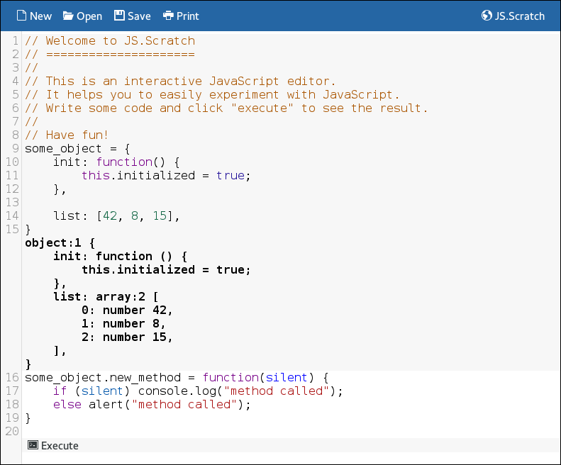
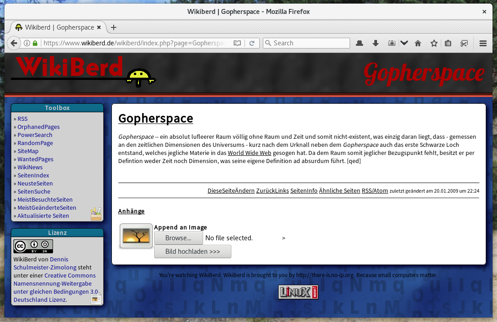
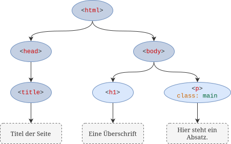

Jetzt geht es los, wir entwerfen unsere erste Webseite. Hier
lernst du daher die Sprache HTML kennen, mit der alle Inhalte
im Web beschrieben werden. Zusätzlich lernst du CSS zur Gestaltung
der Inhalte kennen
<!DOCTYPE html>
<html>
<head>
<meta charset="utf-8" />
<title>Beispiel für eine einfache HTML-Datei</title>
</head>
<body>
<h1>Eine einfache Webseite</h1>
<p>
Dies ist eine <u>einfache</u> HTML-Seite zur Verdeutlichung
der grundlegenden HTML-Syntax. Wie man gut sehen kann, handelt
es sich bei HTML um ein einfaches Format, das man auch ohne
große Erklärungen schnell versteht.
</p>
<hr />
<p>
Programmiersprachen, die der Strukturierung einer Textdatei durch
in den Text eingebettete, für Menschen lesbare Steuerinformationen
dienen, nennt man <a href="https://de.wikipedia.org/wiki/Auszeichnungssprache">
Markup Languages</a> oder Auszeichnungssprachen.
</p>
</body>
</html>
Das Video zeigt den grundlegenden Aufbau einer Webseite und wie beim Anlegen eines neuen
Webprojekts vorgegangen werden muss.
Dieses Video zeigt, wie Webseiten mit einem lokalen Webserver getestet werden können.
Denn spätestens bei der Programmierung mit JavaScript lassen sich bestimmte Funktionen
nur nutzen, wenn die Seiteb tatsächlich über einen Server abgerufen und nicht einfach
per Doppelklick als Datei aufgerufen werden.
Aufgabe 1: Deine erste HTML-Datei
Führe die folgenden Schritte zur Erstellung einer einfachen Webseite aus:
Kopiere den Quellcode der vorangegangenen Folie in einen Texteditor deiner Wahl.
Speichere die Datei mit der Endung .html ab und öffne sie im Browser.
Ändere ein paar Inhalte in der Datei und schaue dir das Ergebnis an.
Lege eine zweite HTML-Datei an und baue jeweils einen Link von der einen auf die andere ein.
Achte auf den richtigen Zeichensatz der Datei. Das Tag
<meta charset="utf-8" /> weist den Browser
an, die Datei als UTF-8-Datei zu lesen. Sonst werden die Umlaute und Sonderzeichen
nicht richtig dargestellt.
Legt den Dokumenttitel fest, der in der Titelzeile des Browsers angezeigt wird.
<meta name="name" content="wert" />
Erlaubt es, verschiedene Metadaten wie den Autor der Seite oder Schlagwörter zu ihrem
Inhalt zu definieren. Diese Informationen werden von den Suchmaschinen praktisch aber
nicht mehr ausgewertet.
<meta charset="utf-8" />
Sonderform des <meta>-Tags zur Definition
des Zeichensatzes der Seite. Der Standardwert lautet utf-8, sollte aber
trotzdem immer mitgegeben werden, damit Umlaute und Sonderzeichen richtig dargestellt
werden.
<link rel="shortcut icon" href="favicon.svg" />
Ordnet der Seite ein Icon zu, das neben ihrem Titel angezeigt wird.
<h1>Per Anhalter durch die Galaxis</h1>
<h2>Die fünfteilige Trilogie</h2>
<h3>Entstehung des ersten Buchs</h3>
Die Elemente <h1> bis
<h6> definieren Überschriften
verschiedener Arten. <h1> ist
dabei eine Hauptüberschrift, <h2>
eine Unterüberschrift, <h3>
eine Unterunterüberschrift und so weiter.
<p>
Dies ist ein Absatz, wie er unter einer Überschrift stehen könnte.
<p>
Absätze werden mit dem <p>-Element
definiert. Das „p” steht dabei für „Paragraph”. Absätze sollten in der Regel
nicht geschachtelt werden. Überschriften sollten ebenfalls oberhalb und nicht
innerhalb der Absätze stehen.
<!DOCTYPE html>
<html>
<head>
...
</head>
<body>
<h1>Per Anhalter durch die Galaxis</h1>
<h2>Die fünfteilige Trilogie</h2>
<p>
Per Anhalter durch die Galaxis ist eine Romanreihe des britischen
Autors Douglas Adams, die ab den ausgehenden 1970er Jahren in
verschiedenen Medien erschien. Von Adams selbst stammen dabei der ersten
fünf Bücher der fünfteiligen Trilogie. Im Jahr 2009 erschien acht Jahre
nach seinem Tod die Fortsetzung „Und übrigens noch was …” von Eoin Colfer.
</p>
<p>
Die Serie umfasst daher folgende Titel:
</p>
...
</body>
</html>
Per Anhalter durch die Galaxis
Die fünfteilige Trilogie
Per Anhalter durch die Galaxis ist eine Romanreihe des britischen
Autors Douglas Adams, die ab den ausgehenden 1970er Jahren in
verschiedenen Medien erschien. Von Adams selbst stammen dabei der ersten
fünf Bücher der fünfteiligen Trilogie. Im Jahr 2009 erschien acht Jahre
nach seinem Tod die Fortsetzung „Und übrigens noch was …” von Eoin Colfer.
Einzelne Wörter oder Teile eines Satzes können mit den hier gezeigten
Elementen direkt formatiert werden. Es handelt sich um die einzigen
HTML-Elemente, die direkt das Aussehen ihres Inhalts verändern. Lange
Zeit war ihre Verwendung nicht gern gesehen. Seitdem man den Elementen
aber eine semantische Bedeutung gegeben und dann festgelegt hat, wie
diese dargestellt werden soll, geht die Verwendung wieder in Ordnung. 🙃
<!DOCTYPE html>
<html>
<head>
...
</head>
<body>
<p>
<b>Wichtiger Hinweis:</b> Lese immer das Kleingedruckte eines
Vertrags, auch wenn es oft viel Text ist, den man nur schwer lesen
und kaum verstehen kann. <i>Im Kleingedruckten stecken oft viele
ungeahnte Fallen!</i>
</p>
<p>
<u>Hier ein Beispiel:</u>
</p>
<p>
<small>
<small>
Sämtliche in der Werbung getroffenen Aussagen sind frei erfunden.
Wir garantieren für nichts und erstatten auch kein Geld zurück.
Wer bei uns kauft, ist selbst schuld.
</small>
</small>
</p>
</body>
</html>
Wichtiger Hinweis: Lese immer das Kleingedruckte eines
Vertrags, auch wenn es oft viel Text ist, den man nur schwer lesen
und kaum verstehen kann. Im Kleingedruckten stecken oft viele
ungeahnte Fallen!
Hier ein Beispiel:
Sämtliche in der Werbung getroffenen Aussagen sind frei erfunden.
Wir garantieren für nichts und erstatten auch kein Geld zurück.
Wer bei uns kauft, ist selbst schuld.
<br />
Definiert einen Zeilenumbruch, ohne einen neuen Absatz zu beginnen.
Manchmal kann das ganz nützlich sein, um auf die Schnelle ein paar
Elemente untereinander anzuordnen. <br />
sollte aber sparsam verwendet werden, da die Umbrüche auf kleineren
Bildschirmen oftmals unschön aussehen.
<hr />
„hr” steht für „Horizontal Ruler” und fügt eine waagerechte Trennlinie
ein. Heutzutage sieht man das Element nicht mehr so oft. Braucht man
aber nur eine kleine Trennlinie, ist es oft einfacher, als sich mit den
Rahmenlinien eines Absatzes herumzuschlagen.
<!DOCTYPE html>
<html>
<head>
...
</head>
<body>
<b>Alice Wunderland</b> <br />
Hinter dem Haus 7 <br />
76185 Karlsruhe-Märchendorf
<hr />
<b>Grinsender Kater</b> <br />
Im Garten 9 <br />
76185 Karlsruhe-Märchendorf
</body>
</html>
Alice Wunderland
Hinter dem Haus 7
76185 Karlsruhe-Märchendorf
Grinsender Kater
Im Garten 9
76185 Karlsruhe-Märchendorf
<img src="familie.jpg" alt="Meine Familie und der Hund" />
<img src="../fotos/feuerstein.jpg" alt="Fred Feuerstein" />
<img src="www.beispiel.de/album/geroellheimer.jpg" alt="Barnie Geröllheimer" />
Mit diesem Tag wird ein Bild in die Seite eingefügt. Das Attribut
src beinhaltet dabei die URL des Bildes, wobei das Bild
entweder im selben Verzeichnis, in einem anderen Verzeichnis oder sogar
auf einem anderen Server liegen kann. alt ist der Alternativtext,
der zum Beispiel von Screenreadern vorgelesen wird. Deshalb sollte dieses
Attribut immer mitgegeben werden, wenn das Bild wesentliche Informationen
beinhaltet.
<a href="http://www.wpvs.de/js/">JS.Scratch</a>
Dies ist ein Link bzw. Verweis auf eine andere Seite. „a” steht dabei für
„Anchor”. Bei einem Link muss es sich nicht, wie hier gezeigt, um einfachen
Text handeln. Zwischen dem öffnenden und dem schließenden Tag dürfen
beliebige HTML-Elemente stehen, um sie anklickbar zu machen.
<a id="uebersicht" />
Dies ist kein Link auf eine andere Seite sondern ein Anker innerhalb derselben
Seite. Das Tag wird daher vom Browser nicht dargestellt. Durch Anhängen von
#uebersicht an die aktuelle URL kann beim Aufruf der Seite aber
direkt an die Stelle des Ankers gesprungen werden. Wenn du genau hinsiehst, ist
dir das sicher schon mal bei Wikipedia und anderen Seiten aufgefallen,

Editor starten
<ul>
<li>Garfield langt zu</li>
<li>Garfield schläft sich durch</li>
<li>Garfield überlebensgroß</li>
<li>Garfield breitet sich aus</li>
<li>Garfield sahnt ab</li>
</ul>
„ul” steht für „Unordered List” und beschreibt eine unsortierte Liste,
also eine einfache Liste ohne Nummerierung. Dementsprechend sind die
<li>-Elemente die „List Items”.
Die Listenelemente können beliebigen weiteren HTML-Quellcode wie Absätze
oder untergeordnete Listen enthalten.
<ol>
<li>Per Anhalter durch die Galaxis</li>
<li>Das Restaurant am Ende des Universums</li>
<li>Das Leben, das Universum und der ganze Rest</li>
<li>Macht's gut und danke für den Fisch</li>
<li>Einmal Rupert und zurück</li>
</ol>
Das ist eigentlich dasselbe wie <ul>,
nur dass es sich um eine „Ordered List” also eine Liste mit Aufzählungszeichen handelt.
<!DOCTYPE html>
<html>
<head>
...
</head>
<body>
<h2>Meine Lieblinugsbücher als ich jung war</h2>
<ul>
<li>
<p>
Garfield-Comics
</p>
<ul>
<li>Garfield langt zu</li>
<li>Garfield schläft sich durch</li>
<li>Garfield überlebensgroß</li>
<li>Garfield breitet sich aus</li>
<li>Garfield sahnt ab</li>
</ul>
</li>
<li>
<p>
Anhalter-Romane
</p>
<ol>
<li>Per Anhalter durch die Galaxis</li>
<li>Das Restaurant am Ende des Universums</li>
<li>Das Leben, das Universum und der ganze Rest</li>
<li>Macht's gut und danke für den Fisch</li>
<li>Einmal Rupert und zurück</li>
</ol>
</li>
</ul>
</body>
</html>
Meine Lieblinugsbücher als ich jung war
Garfield-Comics
Garfield langt zu
Garfield schläft sich durch
Garfield überlebensgroß
Garfield breitet sich aus
Garfield sahnt ab
Anhalter-Romane
Per Anhalter durch die Galaxis
Das Restaurant am Ende des Universums
Das Leben, das Universum und der ganze Rest
Macht's gut und danke für den Fisch
Einmal Rupert und zurück
Aufgabe 2: Verschiedene HTML-Elemente anwenden
Lege eine neue HTML-Datei an und probiere die gelernten HTML-Tags aus:
Definiere mehrere Absätze mit Überschriften und Unterüberschriften.
Verwende mindestens eine geordnete oder ungeordnete Aufzählungsliste.
Baue ein/zwei Bilder in die Seite ein. Achte darauf, dass sie nicht zu groß sind!
Füge der Seite einen Link auf einen Wikipedia-Artikel deiner Wahl hinzu.
So könnte die Seite zum Beispiel aussehen:
Aufgabe 3: Ein kleines HTML-Quiz
<header><body><p><main><ul><b><h1><head><br><hr><p><div>
<ul>
<li>…</li>
<li>…</li>
<li>…</li>
</ul>
<ol>
<li>…</li>
<li>…</li>
<li>…</li>
</ol>
Hinweis:
Recherchiere für diese Augabe zunächst die unten genannten Grafikformate im Internet.
PNGGIFSVGJPEGPNGGIFSVGJPEGPNGGIFSVGJPEG
Strukturgebende Elemente
Die meisten HTML-Elemente besitzen kein spezielles Aussehen, sondern erhalten dieses
erst durch ein Stylesheet.¹
Jedoch unterscheiden sich die Elemente in der Art, wie sie auf dem Bildschirm
angeordnet werden:
Blockelemente umschließen einen größeren Bereich mit beliebig viel Inhalt.
Inline-Elemente sind Teil des Fließtexts und werden innerhalb dessen platziert.
¹
Siehe Folien über CSS weiter hinten
Anordnung von Blockelementen
Die meisten HTML-Elemente sind Blockelemente. Sie stehen in der Regel untereinander
und nehmen immer eine maximale Breite in Anspruch. Die Breite wird dabei durch das
sie umgebende Elternelement begrenzt. Beispiele hierfür sind:
Werden Blockelemente ineinander geschachtelt, wird auch ihr Inhalt geschachtelt
dargestellt. Blockelemente eignen sich daher hervorragend, die Gesamtstruktur
einer Seite zu definieren.
Anordnung von Inline-Elementen
Inline-Elemente werden als Teil des Fließtextes angeordnet, ganz so als ob es
Buchstaben wären. Sie stehen daher mit dem sie umgebenden Text in einer Linie
und werden (wie der Text auch) bei Bedarf in eine neue Zeile umgebrochen.
Der Zeilenumbruch kann dabei sogar innerhalb eines Inline-Elements erfolgen,
so dass Teile davon am Ende der einen Zeile und der Rest am Anfang der nächsten
Zeile stehen. Davon abgesehen richten sich Höhe und Breite nach dem Inhalt,
so dass ein Inline-Element immer nur gerade so groß ist, dass es seinen Inhalt
umschließen kann. Beispiele für Inline-Elemente sind:
Fahre mit der Maus über ein Element, um seine wahre Größe zu sehen.
Webprogrammierung ganz leicht
(versprochen)
Strukturierung des HTML-Codes
Die größte Kunst beim Erstellen einer HTML-Seite ist es, eine gute
Struktur für den HTML-Code zu finden, die einerseits möglichst einfach
das gewünschte Layout erzielt und andererseits auch übersichtlich und
leicht zu verstehen ist. Damit dies gelingt ist es daher wichtig, die
Layoutalgorithmen des Browsers zu verstehen und zu wissen, wie welches
Element auf dem Bildschirm angeordnet wird. Zwar kann die Anordnung im
Stylesheet nachträglich verändert werden, der gesamte Quellcode wird
dadurch aber sehr komplex und fehleranfällig.
Zusammenspiel mit dem Stylesheet
Idealerweise sollte der HTML-Code nur die darzustellenden Inhalte und
die grobe Struktur der Seite beinhalten. Die Layoutregeln des Browsers
sollten dabei so ausgenutzt werden, dass auch ohne Stylesheet die
Anzeige näherungsweise schon dem gewünschten Ergebnis entspricht. In
dem (oder den) Stylesheet(s) sollten dann kosmetische Anpassungen
vorgenommen werden, um die Details des Layouts zu optimieren.
Allerdings ist dies nicht immer möglich. Immer dann, wenn der
voreingestellte Layoutalgorithmus des Browsers nicht das gewünschte
Ergebnis liefern kann (beispielsweise wenn mehrere Blockelemente
nebeneinander stehen sollen), muss im Stylesheet aktiv ein anderer
Layoutalgorithmus ausgewählt werden. Beispiele hierfür sind:
Aboslute oder relative Positionierung
Tabellarische Darstellung
„Sticky” Elemente (bleiben beim Scrollen oben oder unten kleben)
„Fixe” Elemente (verändern ihre Position auch beim Scrollen nicht)
Flexbox (zur Ausrichtung mehrerer Elemente neben- oder untereinander)
Grid Layout (für UI-artige Layouts mit Sidebar usw.)
<!DOCTYPE html>
<html lang="de">
<head>
<meta charset="utf-8" />
<title>Webprogrammierung ganz leicht</title>
<meta name="viewport" content="width=device-width, initial-scale=1">
<link rel="stylesheet" href="style.css" />
</head>
<body>
<header>
Fahre mit der Maus über ein Element, um seine wahre Größe zu sehen.
</header>
<main>
<section id="banner">
<h1>Webprogrammierung ganz leicht</h1>
(versprochen)
</section>
<section id="content">
<h3>Strukturierung des HTML-Codes</h3>
<p>
Die größte Kunst beim Erstellen einer HTML-Seite ist es, eine gute
Struktur für den HTML-Code zu finden, die einerseits möglichst einfach
das gewünschte Layout erzielt und andererseits auch übersichtlich und
leicht zu verstehen ist. Damit dies gelingt ist es daher wichtig, die
Layoutalgorithmen des Browsers zu verstehen und zu wissen, wie welches
Element auf dem Bildschirm angeordnet wird. Zwar kann die Anordnung im
Stylesheet nachträglich verändert werden, der gesamte Quellcode wird
dadurch aber sehr komplex und fehleranfällig.
</p>
<h3>Zusammenspiel mit dem Stylesheet</h3>
<p>
Idealerweise sollte der HTML-Code nur die darzustellenden Inhalte und
die grobe Struktur der Seite beinhalten. Die Layoutregeln des Browsers
sollten dabei so ausgenutzt werden, dass auch ohne Stylesheet die
Anzeige näherungsweise schon dem gewünschten Ergebnis entspricht. In
dem (oder den) Stylesheet(s) sollten dann kosmetische Anpassungen
vorgenommen werden, um die Details des Layouts zu optimieren.
</p>
<p>
Allerdings ist dies nicht immer möglich. Immer dann, wenn der
voreingestellte Layoutalgorithmus des Browsers nicht das gewünschte
Ergebnis liefern kann (beispielsweise wenn mehrere Blockelemente
nebeneinander stehen sollen), muss im Stylesheet aktiv ein anderer
Layoutalgorithmus ausgewählt werden. Beispiele hierfür sind:
</p>
<ul>
<li>
Aboslute oder relative Positionierung
</li>
<li>
Tabellarische Darstellung
</li>
<li>
„Sticky” Elemente (bleiben beim Scrollen oben oder unten kleben)
</li>
<li>
„Fixe” Elemente (verändern ihre Position auch beim Scrollen nicht)
</li>
<li>
Flexbox (zur Ausrichtung mehrerer Elemente neben- oder untereinander)
</li>
<li>
Grid Layout (für UI-artige Layouts mit Sidebar usw.)
</li>
</ul>
</section>
</main>
<footer>
<img src="img/logo.png" />
<span>
Made with <span class="heart">❤️</span> by Beaver Productions
</span>
</footer>
</body>
</html>
Im Video werden der Unterschied zwischen Block- und Inlineelementen sowie der
Quellcode des Beispiels besprochen.
Beispiel für eine komplexe Webseite

<html>
<head>
<meta charset="utf-8" />
<title>WikiBerd | Gopherspace</title>
<meta name="viewport" content="width=device-width, initial-scale=1">
</head>
<body>
<!-- Kopfbereich mit dem Titel der Seite -->
<header>
<img src="logo.png" alt="WikiBerd"/>
<h1>Gopherspace</h1>
</header>
<!-- Hauptbereich der Seite -->
<main>
<i>Gopherspace</i> -- ein absolut luftleerer Raum …
</main>
<!-- Side Bar mit Toolbox und Lizenz -->
<aside>
<nav>
<h6>Toolbox<h6>
<ul>
<li> <a href="…">RSS</a> </li>
…
</ul>
</nav>
<section>
<h6>Lizenz<h6>
…
</section>
</aside>
<!-- Fußbereich der Seite -->
<footer>
You‘re watching WikiBerd. …
</footer>
</body>
</html>
Aufgabe 4: Welcher Quellcode passt?
Welcher Quellcode entspricht am ehesten der Abbildung?
<!DOCTYPE html>
<html>
<head>
<meta charset="utf-8" />
<title>IoT/Embedded-Workshop 2017</title>
<meta name="viewport" content="width=device-width, initial-scale=1">
</head>
<body>
<h1>IoT/Embedded-Workshop 2017</h1>
<div>
6. Semester Wirtschaftsinformatik, DHBW Karlsruhe
</div>
<hr />
<h2>Vielen Dank für die erfolgreichen Projekte</h2>
<p>
An dieser Stelle vielen Dank an alle Projektteilnehmer …
</p>
<div>
dennis …
</div>
<h2>DingDong 9. Blogeintrag: Die PhoneGap Applikation</h2>
<p>
Zu guter Letzt kommt in diesem Artikel noch die Applikation …
</p>
<div>
katholnigs …
</div>
…
</body>
</html>
<!DOCTYPE html>
<html>
<head>
<meta charset="utf-8" />
<title>IoT/Embedded-Workshop 2017</title>
<meta name="viewport" content="width=device-width, initial-scale=1">
</head>
<body>
<header>
<h1>IoT/Embedded-Workshop 2017</h1>
6. Semester Wirtschaftsinformatik, DHBW Karlsruhe
</header>
<main>
<article>
<h2>Vielen Dank für die erfolgreichen Projekte</h2>
<p>
An dieser Stelle vielen Dank an alle Projektteilnehmer …
</p>
<footer>
dennis …
</footer>
</article>
<article>
<h2>DingDong 9. Blogeintrag: Die PhoneGap Applikation</h2>
<p>
Zu guter Letzt kommt in diesem Artikel noch die Applikation …
</p>
<footer>
katholnigs …
</footer>
</article>
…
</main>
<aside>
<input name="search" placeholder="Suchen" />
<h5>Kategorien</h5>
<nav>
…
</nav>
</aside>
</body>
</html>
<!DOCTYPE html>
<html>
<head>
<meta charset="utf-8" />
<title>IoT/Embedded-Workshop 2017</title>
<meta name="viewport" content="width=device-width, initial-scale=1">
</head>
<body>
<div name="header">
<h1>IoT/Embedded-Workshop 2017</h1>
6. Semester Wirtschaftsinformatik, DHBW Karlsruhe
</div>
<div name="main">
<div class="article">
<h2>Vielen Dank für die erfolgreichen Projekte</h2>
<div class="preview">
An dieser Stelle vielen Dank an alle Projektteilnehmer …
</div>
<div class="footer">
dennis …
</div>
</div>
<div class="article">
<h2>DingDong 9. Blogeintrag: Die PhoneGap Applikation</h2>
<div class="preview">
Zu guter Letzt kommt in diesem Artikel noch die Applikation …
</div>
<div class="footer">
katholnigs …
</div>
</div>
…
</div>
<div id="sidebar">
<input name="search" placeholder="Suchen" />
<h5>Kategorien</h5>
<div>
…
</div>
</div>
</body>
</html>
Die Lösung ist Quellcode 2 oder 3, eher aber noch Quellcode 2.
Quellcode 1 ist es nicht, da er nicht alle Elemente enthält.
Unter anderem fehlt die Sidebar.
Quellcode 2 enthält ansatzweise alle Elemente des Screenshots.
Zusätzlich nutzt er Tags wie
<article> und
<nav>, welche die
Bedeutung der eingeklammerten Bereiche widerspiegeln.
Quellcode 3 könnte es auch sein. Die vielen <div>
sind aber nicht so übersichtlich.
<style> innerhalb des
<head> wirkt auf die
gesamte Seite.
Mit dem style-Attribut können
einzelne HTML-Elemente gestyled werden.
<!DOCTYPE html>
<html>
<head>
<meta charset="utf-8">
<title>HTML und CSS in einer Datei</title>
<meta name="viewport" content="width=device-width, initial-scale=1">
<style>
h1 {
color: #CD0D0D;
text-shadow: 1px 1px 1px grey;
margin: 0;
}
p {
margin-top: 0.5em;
}
</style>
</head>
<body>
<h1>HTML und CSS endlich vereint!</h1>
<p>
Was lange währt, wird endlich gut. Nachdem sich HTML und
CSS nach ihrer Trennung lange Zeit nicht mehr gesehen haben,
haben sie heute endlich wieder zueinander gefunden.
</p>
<p style="color: darkred; font-weight: bold;">
Mit dem style-Attribut kann man gezielt einzelne Elemente
gestalten. Das style-Element wirkt hingegen auf die ganze
Seite und sollte daher eher im head stehen.
</p>
</body>
</html>
CSS-Selektoren und das Document Object Model
Das Document Object Model

html body h1 p
Auswahl von Elementen nach ihrem Tag-Namen
#logo
Das Element mit id="logo"
.card
Alle Elemente mit class="card"
input[readonly]
Alle
<input>, die ein
Attribut namens readonly besitzen
h1, h2, h3
ODER-Verknüpfung bzw. Vereinigungsmenge mehrerer Selektoren
section.warning
UND-Verknüpfung zweier Selektoren:
Alle <section> mit
class="warning"
article .infobox
Eltern/Kind-Beziehung (transitiv): Alle Elemente mit
class="infobox", die irgendwo
innerhalb eines <article>-Elements
stehen
section > h1
Eltern/Kind-Beziehung (nicht transitiv): Alle
<h1>, deren direktes Elternelement
eine <section> ist
Häufig benötigte CSS-Anweisungen
font-family: Liberation Sans, Arial, sans-serif;
Legt die Schriftart für ein Element und seine Unterelemente fest.
Werden mehrere Schriftarten angegeben, wird die erste gefundene verwendet.
Immer vorhandene Schriften sind: serif, sans-serif,
monospace, fantasy.
font-size: 12pt;
Legt die Schriftgröße eines Elements fest. Erlaubt sind entweder numerische Werte oder
folgende Konstanten: small, x-small, large,
x-large, …
font-weight: bold;
Legt fest, wie kräftig die Schrift erscheint. bold ist der normale Fettdruck.
Es gibt aber auch normal, bolder und lighter.
color: crimson;
Ändert die Schriftfarbe des aktuellen Elements. Erlaubt sind alle Farbwerte, wie
auf der nächsten Folie beschrieben.
<html>
<head>
<meta charset="utf-8" />
<link rel="stylesheet" href="style.css" />
<title>Beispiel</title>
</head>
<body>
<h1>Dies ist eine Überschrift 1</h1>
<p>
Und dies ist ein kleiner Absatz.
</p>
</body>
</html>
Dies ist eine Überschrift 1
Und dies ist ein kleiner Absatz.
background-color: rgba(244, 186, 110, 0.9);
Ändert die Hintergrundfarbe eines Elements. Erlaubt sind natürlich
alle Farbwerte aus der nächsten Folie. Mit rgba() lassen
sich damit auch halbdurchsichtige Hintergründe definieren.
background-image: url(bg.jpg);
Legt ein Hintergrundbild fest, das standardmäßig so oft wiederholt
wird, bis das Element komplett damit bedeckt ist. Siehe Folie 8
für weitere Möglichkeiten.
<html>
<head>
<meta charset="utf-8" />
<link rel="stylesheet" href="style.css" />
<title>Beispiel</title>
</head>
<body>
<header>
<div id="company-name">
Geldsack AG - Finanzdienstleistungen
</div>
</header>
<div class="main">
Hier kommt auch irgend ein Text hin …
</div>
<footer class="black">
Alle Rechte vorbehalten
</footer>
</body>
</html>
Hier kommt auch irgend ein Text hin …
display: block; display: inline;
Dies sind die bekannten Voreinstellungen des Browsers, so wie sie im
HTML-Folienatz erklärt wurden.
display: inline-block;
Eine Mischung aus Inline- und Blockelement. Im Prinzip handelt es sich
beim betroffenen Element weiterhin um ein Blockelement, das sich in Teilen
aber wie ein Inline verhält. Unter anderem passen sich Breite und Höhe komplett
dem Inhalt an und es kann in derselben Zeile stehen wie weitere
inline-block-Elemente
Legen die Breite und Höhe der ausgewählten Elemente fest. width
und height legen eine fixe Größe fest und können daher dazu führen,
dass zu viel Inhalt aus den Elementen herausragt.
min-width und min-height
erlauben dem Element hingegen, mit seinem Inhalt zu wachsen.
overflow: hidden;
Sorgt dafür, dass zu großer Inhalt nicht aus dem Element herausläuft, sondern abgeschnitten wird.
Erlaubt es, die vier Abstände um ein Element herum einzeln zu definieren.
Die Kurzform in der ersten Zeile wird im Uhrzeigersinn gelesen: Oben, rechts, unten, links.
Im Prinzip dasselbe wie margin, nur dass
es nicht um den Platz um das Element herum geht, sondern um den inneren
Abstand vom Rand des Elements zu seinem Inhalt.
Verschiedene Optionen zur Definition der Rahmendicke, Rahmenart und Rahmenfarbe.
border-width, border-style
und border-color können alle vier oder nur eine Seite beeinflussen.
Für letzteres muss nach border- eine der vier Richtungen angegeben
werden: top; right,
bottom, left.
Früher waren alle HTML-Elemente eckig wie Toastbrot. 🍞 Heute können sie auch
abgerundete Ecken besitzen.
box-shadow: 2px 2px 4px rgba(0,0,0, 0.5);
Zeichnet einen weichen Schatten um das Element herum. Diese Anweisung ist
der Schlüssel zum Google Material-Design. Die vier Werte bedeuten: X-Richtung,
Y-Richtung, Weichzeichnung und Farbe.
divp.absatzp > .absatzpinfo#info.infoinfo()page-title#page-title.page-titlepage #title
d) … alle Elemente der Klasse „active” innerhalb eines
<nav>-Elements (zwei Varianten)?
nav .activenav > .activenav.activenav #activefont-sizefont-familyfont-weighttext-decorationbackground-colorbackground-imagebackground-sizebackgroundpaddingmarginborderborder-radiustext-decorationtext-shadowbox-shadow
Aufgabe 6: HTML-Elemente auswählen
Bitte Warten. Die Aufgabe wird geladen.
Gegeben sei folgender HTML-Code:
Gebe die entsprechenden CSS-Selektoren ein, um folgende HTML-Elemente auszuwählen.
Bei richtiger Eingabe wird der ausgewählte HTML-Quellcode farblich hervorgehoben,
so lange der Fokus auf einem der Eingabefelder steht.
Versuche immer eine möglichst einfache Lösung zu finden, da die Menge der zulässigen
Antworten fest einprogrammiert ist. Sonst kann es vorkommen, dass eine Antwort technisch
gesehen zwar richtig ist, dennoch aber als falsch gewertet wird.
a) body
b) header, footer
c) #logo
d) header h1
e) nav ul
f) nav ul li
g) main h1
h) .info-box
i) main > p
f) .emoji
Aufgabe 7: Dein erstes Stylesheet
Kopiere den folgenden Quellcode in eine neue HTML-Datei und passe das
Stylesheet gemäß der Beschreibung an. Das Ergebnis sollte ungefähr wie
auf dem dritten Reiter aussehen.
Ordnet man einem beliebigen Element ein Hintergrundbild zu, wird das Bild
standardmäßig wie die Kacheln im Bad so oft wiederholt, bis sie das ganze
Element ausfüllen. In der Regel ordnet man es daher dem
<html> oder <body>
zu, um die ganze Seite damit auszufüllen.
Vor allem in den frühen Jahren des Web hat man diesen Effekt häufig gesehen.
Heute wirkt es jedoch oft altbacken und wird daher nicht mehr so oft angewendet.
Beispiel
Meine erste Webseite
Und sie hat sogar einen gekachelten Hintergrund, so wie früher in den 1990ern.
Na ja, modern ist das nicht. Heute bevorzugt man eher einfarbige Hintergründe.
html {
background-image: url(foto.jpg);
background-repeat: no-repeat;
background-position: center center;
background-size: cover;
}
Die obigen CSS-Anweisungen zeigen, wie man der Seite ein Hintergrundbild zuordnen
kann, das immer die volle Größe ausfüllt. Da man nicht wissen kann, welche Größe
des Browserfenster später haben wird, wird um die Mitte herum alles abgeschnitten,
was nicht in das Fenster passt. Das Bild wird dafür aber immer so gestreckt, dass
es das ganze Fenster ausfüllt ohne zu verzerren.
Dieser Effekt war in den 2010ern eine Zeit lang modern, tritt inzwischen aber
nicht mehr ganz so oft auf. Wichtig ist, dass man trotz des Bildes die Schrift
noch gut lesen kann.
Ordnet man die Hintergrundbilder nicht der gesamten Seite sondern einzelnen
untereinander stehenden Elementen zu und verwendet man dabei noch die Anweisung
background-attachment: fixed;, entsteht ein
interessanter Effekt. Beim Scrollen bleibt der Hintergrunds stehen und nur der
Inhalt der jeweiligen Elemente scrollt weiter. Wechselt man dabei immer ein
Element mit background-attachment: fixed;
ab mit einem Element ohne diese Anweisung, entsteht ein interessanter Effekt,
durch den sich ein Bild quasi über das andere schiebt.
Dieser Effekt, der ebenfalls seit ca. 2010 sehr beliebt ist, nennt sich „Parallax
Scrolling”. Er eignet sich am besten für One-Pager, also Webseiten, die nur aus
einer langen, nach unten scrollenden Seite bestehen. Manche Webdesigner haben
den Effekt mit JavaScript perfektioniert und auf die Spitze getrieben. Das Grundgerüst
ist aber ziemlich einfach.
Auf mobilen Geräten funktioniert der Effekt ziemlich schlecht, da diese, um Akku
zu sparen, verschiedene Optimierungen beim Scrollen anwenden, die mit
background-attachment: fixed; nicht
harmonieren. Man sollte den Effekt daher durch ein „Media Query” auf nicht-mobile
Geräte beschränken.
Legt fest, welche Eigenschaften animiert werden sollen und wie lange
die Animation jeweils dauern soll. Mehrere Animationen können durch
Komma getrennt definiert werden. Abgespielt werden den Animationen,
wenn sich die jeweilige Eigenschaft verändert. Hierfür braucht man
eigentlich JavaScript, einfache Mausereignisse gehen aber auch ohne.
Keyframe-Animationen werden mit @keyframe definiert,
wobei der Animation ein eindeutiger Namen gegeben werden muss. Die einzelnen Zeitpunkte
innerhalb der Animation werden in Prozent von 0% bis 100% angegeben. Wie lange die
Animation dauert und wie schnell die Zeitpunkte erreicht sind, hängt von der Geschwindigkeit
ab, die man ihr später gibt.
Über die animation-Anweisung und ihre Ableger wird
eine benannte Keyframe-Animation an ein Element gebunden. Die Animation fängt sofort an
zu laufen und muss nicht zuvor aktiviert werden.
 Komplexe Webseiten
Komplexe Webseiten
 Browser Games
Browser Games
 Mobile Apps
Mobile Apps
 Quellcode im Editor
Quellcode im Editor
 Darstellung im Browser
Darstellung im Browser


 Spielen mit zwei Händen
Spielen mit zwei Händen
 Musizieren vor Publikum
Musizieren vor Publikum